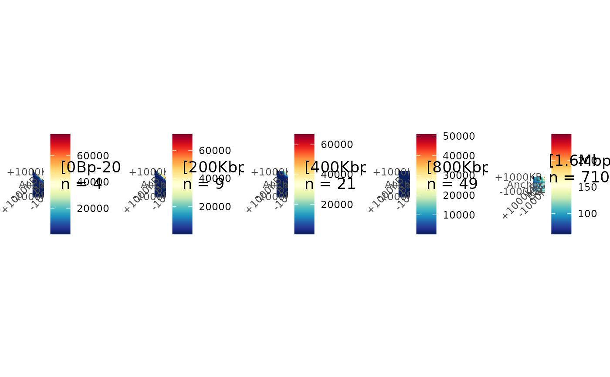

Draw aggregation plots for interactions with different distances.
Source:R/PlotAPA.r
plotMultiAPA.RdSeparates matrices based on interaction distance, performs aggregation and plots Aggregated signal for each chunk of interaction distances.
Arguments
- submatrices
: The matrices list to separate using interaction distances and aggregate. Chunks of distances are created with: c(0,50000*2 ^ seq(0,5,by=1)). Other matrices with distances over 1.6 Mb are aggregated in the same final chunk.- ctrlSubmatrices
: The matrices list to use as control condition for differential aggregation. - ...
: Additional arguments to pass to [Aggregation()]. For differential aggregation plot,
submatriceswill take the matrices of the treated condition. eg:- plot.opts
list of arguments to pass to
ggAPA().
Examples
#' # Data
data(Beaf32_Peaks.gnr)
data(HiC_Ctrl.cmx_lst)
data(HiC_HS.cmx_lst)
# Index Beaf32
Beaf32_Index.gnr <- IndexFeatures(
gRangeList = list(Beaf = Beaf32_Peaks.gnr),
chromSizes = data.frame(seqnames = c("2L", "2R"),
seqlengths = c(23513712, 25286936)),
binSize = 100000
)
# Beaf32 <-> Beaf32 Pairing
Beaf_Beaf.gni <- SearchPairs(indexAnchor = Beaf32_Index.gnr)
Beaf_Beaf.gni <- Beaf_Beaf.gni[seq_len(2000)] # subset 2000 first for eg
# Matrices extractions center on Beaf32 <-> Beaf32 point interaction
interactions_Ctrl.mtx_lst <- ExtractSubmatrix(
genomicFeature = Beaf_Beaf.gni,
hicLst = HiC_Ctrl.cmx_lst,
referencePoint = "pf"
)
interactions_HS.mtx_lst <- ExtractSubmatrix(
genomicFeature = Beaf_Beaf.gni,
hicLst = HiC_HS.cmx_lst,
referencePoint = "pf"
)
interactions_Ctrl.mtx_lst <- PrepareMtxList(
matrices = interactions_Ctrl.mtx_lst
)
# Aggregate matrices in one matrix
plotMultiAPA(submatrices = interactions_Ctrl.mtx_lst)

interactions_HS.mtx_lst <- PrepareMtxList(
matrices = interactions_HS.mtx_lst
)
# Differential Aggregation
plotMultiAPA(
submatrices = interactions_HS.mtx_lst,
ctrlSubmatrices = interactions_Ctrl.mtx_lst,
diffFun = "ratio",
plot.opts = list(colors = list("blue","white","red"))
)